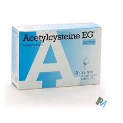

Acetylcysteine

- ေဆးဆိုင္းေတြမွာ Mucomyst တံဆိပ္နဲ႔ ရွာလို႔ေတြ႕ႏိုင္ပါတယ္။
- ပါရာစီတေမာ အဆိပ္ေျဖတဲ့အခါ သံုးႏိုင္သလို အသက္ရွဴလမ္းေၾကာင္းတစ္ေလွ်ာက္က ခၽြဲေတြကိုေပ်ာ္ဝင္ေစႏိုင္တဲ့အာနိသင္လည္းရွိပါတယ္။
ေဆးအသံုးဝင္ပံု
- ရႈေဆးအေနနဲ႔ အဆုတ္ေလအိတ္ေရာဂါ၊ ေလႁပြန္ေရာင္ျခင္း၊ အဆုတ္ေရာင္ေရာဂါမ်ားတြင္ ခၽြဲေပ်ာ္ေစႏိုင္ၿပီး အသက္ရႈရလြယ္ကူေစပါတယ္။
- ေဆးရည္အေနနဲ႔ ပါရာစီတေမာ အေသာက္မ်ားလွ်င္ျဖစ္တတ္ေသာ အသည္းထိခိုက္ျခင္းမွ ကာကြယ္ေပးႏိုင္ပါတယ္။
ေဆးအသံုးျပဳပံု
- ရႈေဆးအေနနဲ႔ ပထမဦးဆံုးအႀကိမ္ ရွဴရင္ အနံ႔တစ္မ်ိဳးရႏိုင္ေပမယ့္ က်င့္သားရသြားပါလိမ့္မယ္။ ႏွာေခါင္းဖံုးနဲ႔ ရွဴရင္ ေစးေစးျဖစ္ႏိုင္ပါတယ္။
- ရွဴၿပီးရင္ ေရႏွင့္ေသခ်ာျပန္ေဆးပါ။ ဆရာဝန္မညႊန္ၾကားဘဲ တျခားရွဴေဆးေတြနဲ႔ တြဲမသံုးရပါ။ ေဆးရည္အေနနဲ႔ဆုိရင္ ဆရာဝန္ညႊန္ၾကားတဲ့ ပမာဏအတိုင္းကို တျခားအရည္တစ္ခုခုနဲ႔ ေရာေဖ်ာ္ၿပီး တစ္နာရီအတြင္း ေသာက္ေပးပါ။
- ေဆးေသာက္ၿပီး တစ္နာရီအတြင္းအန္လွ်င္ ေဆးျပန္ေသာက္ဖို႔လိုအပ္တာေၾကာင့္ ဆရာဝန္ကို ခ်က္ခ်င္းေျပာဖို႔ လိုပါမယ္။
ေဆး၏ဆိုးက်ိဳးမ်ား
- ပ်ိဳ႕အန္ျခင္း၊ ပါးစပ္နဲ႔ ေဆးရွဴမိရင္ ပါးစပ္အနာေပါက္ျခင္း၊ ႏွာရည္ယိုျခင္းမ်ား ျဖစ္ႏိုင္ပါတယ္။ လကၡဏာဆိုးရင္ နီးစပ္ရာ ေဆးခန္း သြားျပပါ။
- ေသာက္ေဆးရည္ရဲ႕ ရွားရွားပါးပါး ျပင္းထန္ဆိုးက်ိဳးအေနနဲ႔ ဗိုက္နာျခင္း၊ ဝမ္းမည္းမည္းသြားျခင္း၊ အညိဳေရာင္အန္ျခင္း စတာေတြ ျဖစ္ႏိုင္ပါတယ္။
- ရွဴေဆးရဲ႕ ျပင္းထန္ဆိုးက်ိဳးအေနနဲ႔ ရင္ဘတ္ေအာင့္ျခင္း၊ အသက္ရွဴၾကပ္ျခင္းေတြ ျဖစ္ႏိုင္ပါတယ္။
- ေဆးမတည့္ျဖစ္ျခင္း ရွားပါတယ္။
သတိျပဳရန္အခ်က္မ်ား
- ပန္းနာရင္ၾကပ္၊ အစာအိမ္ႏွင့္အူလမ္းေၾကာင္းအနာရွိတာ၊ တျခားေဆးေသာက္ေနတာ ဆရာဝန္ကို ႀကိဳအသိေပးသင့္ပါတယ္။
- ကိုယ္ဝန္ေဆာင္နဲ႔ ႏို႔တိုက္မိခင္ေတြမွာေတာ့ ဆရာဝန္ညႊန္ၾကားရင္ သံုးႏိုင္ပါတယ္။
ေဆးအာနိသင္
- Acetylcysteine ေဆးနဲ႔ တျခားေဆးေတြ၊ တိုင္းရင္းေဆးေတြနဲ႔ ဓာတ္ျပဳႏိုင္ပါတယ္။
- ေသြးစစ္ခ်က္မွာလည္း အေျဖမမွန္ႏိုင္တာေၾကာင့္ ေသြးစစ္မႈ မျပဳလုပ္ခင္ ေဆးေသာက္ထားတယ္ဆိုတာ ႀကိဳတင္ အသိေပးဖို႔လိုပါမယ္။
- ပါရာစီတေမာ အဆိပ္ေျဖတဲ့ေနရာမွာ သံုးရင္ေတာ့ အသည္း၊ ေက်ာက္ကပ္၊ ေသြးကို မျပတ္စစ္ၿပီး ေဆးကို လိုတိုးပိုေလွ်ာ့လုပ္ရပါတယ္။
ေဆးေသာက္လြန္ျခင္း
- ျပင္းျပင္းထန္ထန္ဗိုက္ေအာင့္ျခင္း၊ ပ်ိဳ႕အန္ျခင္း၊ အသက္ရႈၾကပ္ျခင္းမ်ား ျဖစ္တတ္ပါတယ္။
Source– ေဒါက္တာအိမ့္ခ်ယ္ရီ